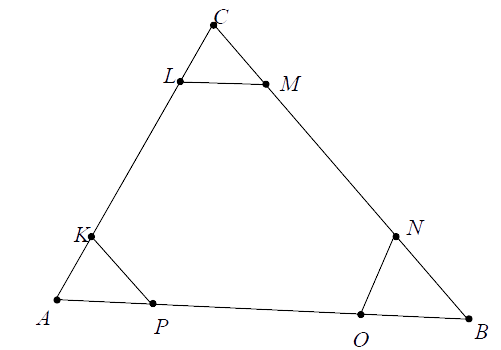
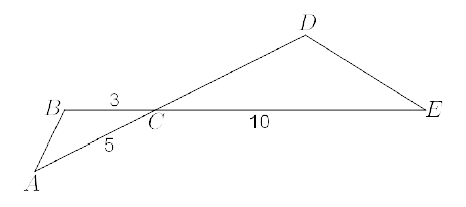
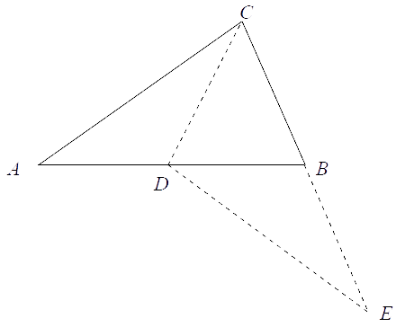
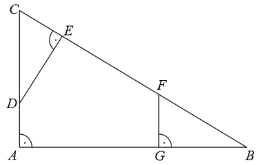

Jesteś tutaj: Matura
podstawowa - kurs - część 45 - zadania
Matura podstawowa - kurs - część 45 - zadania
Cały kurs na: ./matematyka-matura-podstawowa-kurs.html.
Długość odcinka \( AB \), równoległego do odcinka \( CD \), jest równa 
A.\( 6 \)
B.\( 3 \)
C.\( 2 \)
D.\( 4 \)
D
Trójkąty prostokątne \(ABC\) i \(DEF\) są podobne. Przyprostokątne trójkąta \(ABC\)
mają długości \(5\) i \(12\), a przeciwprostokątna trójkąta\(DEF\) ma długość \(26\). Wyznacz pole
trójkąta \(DEF\).
\(P=120\)
Jeżeli trójkąty \( ABC \) i \( A'B'C' \) są podobne, a ich pola są, odpowiednio,
równe \( 25 \) cm2 i \( 50 \) cm2, to skala podobieństwa \( \frac{A'B'}{AB} \)
jest równa
A.\(2 \)
B.\(\frac{1}{2} \)
C.\(\sqrt{2} \)
D.\(\frac{\sqrt{2}}{2} \)
C
Odcinki \( BC \) i \( DE \) są równoległe i \( |AE|=4 \), \( |DE|=3 \) (zobacz
rysunek). Punkt \( D \) jest środkiem odcinka \( AB \). Długość odcinka \( BC \) jest równa 
A.\(4 \)
B.\(6 \)
C.\(8 \)
D.\(16 \)
B
Przedstawione na rysunku trójkąty są podobne.  Wówczas
Wówczas
Wówczas A.\( a=13 \), \(b=17 \)
B.\( a=10 \), \(b=18 \)
C.\( a=9 \), \(b=19 \)
D.\( a=11 \), \(b=13 \)
B
Obwody dwóch trójkątów podobnych, których pola pozostają w stosunku \(1:4\), mogą
być równe
A.\( 9 \) i \(36\)
B.\( 18 \) i \(36\)
C.\( 9 \) i \(144\)
D.\( 18 \) i \(144\)
B
Pole trójkąta \(ABC\) równe jest \(S\). Każdy bok trójkąta podzielono w stosunku
\(x : y : x\), gdzie \(x\) i \(y\) są pewnymi liczbami dodatnimi. Wyznacz pole sześciokąta, którego
wierzchołkami są punkty podziałów boków trójkąta (zobacz rysunek). 
\(S\left (1-3\left (\frac{x}{2x+y}\right )^2\right )\)
Odcinki \(AD\) i \(BE\) przecinają się w punkcie \(C\). W trójkątach \(ABC\) i
\(CDE\) zachodzą związki: \(|\sphericalangle CAB|=|\sphericalangle CED|\), \(|AC|=5\), \(|BC|=3\),
\(|CE|=10\) (zobacz rysunek). Wykaż, że trójkąty \(ABC\) i \(CDE\) są podobne. Oblicz długość boku
\(CD\). 
\(6\)
W trójkącie \(ABC\) punkt \(D\) jest środkiem boku \(AB\) oraz \(|CD|=|CB|\)
(zobacz rysunek). Bok \(CB\) przedłużono tak, że \(|CB|=|BE|\). Wykaż, że \(|AC|=|DE|\). 
Trójkąt \(T\) jest podobny do trójkąta \(T_1\) w skali \(k=\frac{1}{6}\), a trójkąt
\(T_2\) jest podobny do trójkąta \(T\) w skali \(k=3\). Pole trójkąta \(T_2\) jest równe \(24\).
Trójkąt \(T_1\) ma pole równe
A.\( 12 \)
B.\( 48 \)
C.\( 72 \)
D.\( 96 \)
D
Przedstawione na rysunku trójkąty \(ABC\) i \(PQR\) są podobne. Bok \(AB\) trójkąta
\(ABC\) ma długość 
A.\( 8 \)
B.\( 8{,}5 \)
C.\( 9{,}5 \)
D.\( 10 \)
B
Dany jest trójkąt prostokątny \(ABC\). Na przyprostokątnych \(AC\) i \(AB\) tego
trójkąta obrano odpowiednio punkty \(D\) i \(G\). Na przeciwprostokątnej \(BC\) wyznaczono punkty
\(E\) i \(F\) takie, że \(|\sphericalangle DEC|=|\sphericalangle BGF|=90^\circ \) (zobacz rysunek).
Wykaż, że trójkąt \(CDE\) jest podobny do trójkąta \(FBG\). 
Trójkąt \(ABC\) jest podobny do trójkąta \(A'B'C'\) w skali \(\frac{5}{2}\), przy
czym \(|AB|=\frac{5}{2}|A'B'|\). Stosunek pola trójkąta \(ABC\) do pola trójkąta \(A'B'C'\) jest
równy
A.\( \frac{4}{25} \)
B.\( \frac{2}{5} \)
C.\( \frac{5}{2} \)
D.\( \frac{25}{4} \)
D
Trójkąty \(ABC\) i \(DEF\) są podobne. Obwód trójkąta \(ABC\) jest równy \(16\), a
jego pole \(12\). Pole trójkąta \(DEF\) jest równe \(60\). Zatem obwód trójkąta \(DEF\) jest równy:
A.\( 80 \)
B.\( 16\sqrt{5} \)
C.\( \frac{16\sqrt{5}}{5} \)
D.\( \frac{16}{5} \)
B
Dany jest trójkąt o bokach długości: \(2\sqrt{5}\), \(3\sqrt{5}\), \(4\sqrt{5}\).
Trójkątem podobnym do tego trójkąta jest trójkąt, którego boki mają długości
A.\( 10, 15, 20 \)
B.\( 20, 45, 80 \)
C.\( \sqrt{2}, \sqrt{3}, \sqrt{4} \)
D.\( \sqrt{5}, 2\sqrt{5}, 3\sqrt{5} \)
A